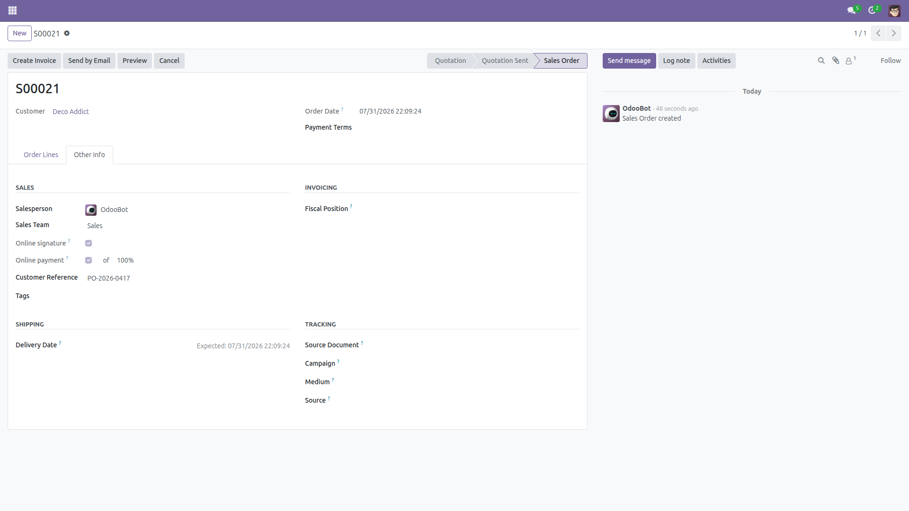
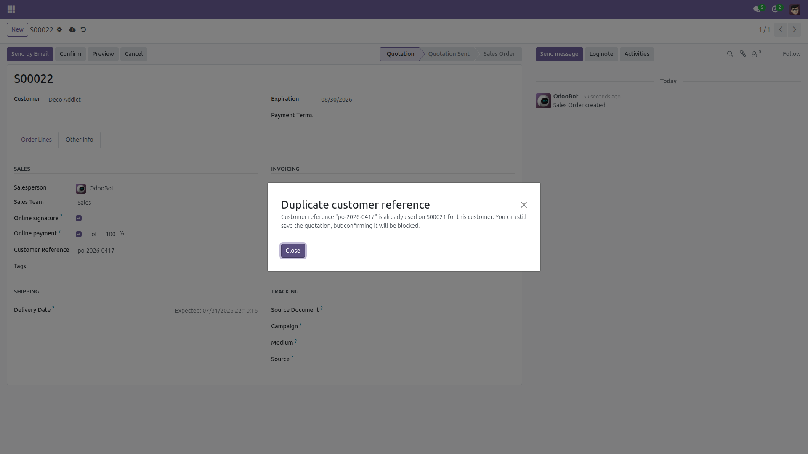
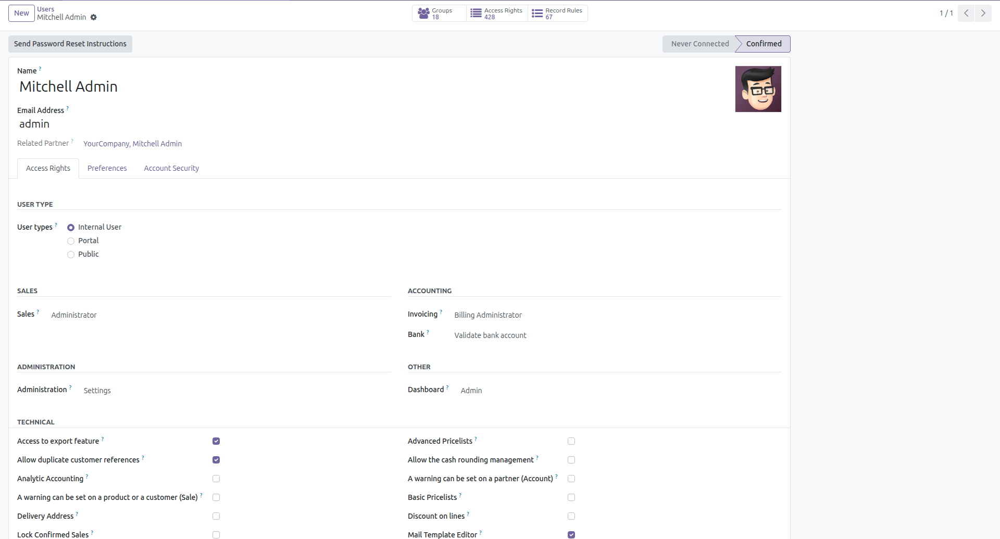

Duplicate Customer Reference Check on Sale Orders
Catch the same customer PO before it becomes two orders and two invoices.
A customer purchase order keyed in twice means duplicate orders, duplicate deliveries and
duplicate invoices — and Odoo accepts any value in the Customer Reference field without
a second look. This module checks the reference against every other non-cancelled sale order
of the same customer the moment you type it, and blocks confirmation of a duplicate.
Free and open source (LGPL-3), Odoo 14.0 through 19.0.
- Warning while quoting — editing the Customer Reference (or changing the customer) pops a non-blocking warning naming the colliding orders.
- Hard stop at confirmation — confirming a duplicate raises a clear error listing up to 5 colliding orders, so it can be saved as a draft but never shipped by accident.
- Customer-wide matching — child contacts (invoice or delivery addresses) are matched through the commercial partner, so the same company cannot sneak a reference in via another address.
- Sees past "own documents only" — the duplicate check itself runs with elevated rights, so a salesperson restricted to their own orders is still warned about a colleague's order; only order numbers the user is allowed to read are shown (otherwise just a count).
- Forgiving comparison — trimmed and case-insensitive:
PO-123 and po-123 are the same reference. Cancelled orders are ignored.
- Controlled exceptions — users in the Allow duplicate customer references group (administrators by default) can confirm anyway, for blanket orders and genuine re-orders.
- No new models, no configuration — a single lightweight check on
sale.order; depends on the standard sale module only.
Screenshots

The first order records the customer's PO number in the standard Customer Reference field — nothing new to learn.

Typing the same reference on a second order for the same customer pops the warning immediately and names the colliding order.

The Allow duplicate customer references checkbox on the user form (Access Rights, developer mode): add the few users who may confirm genuine re-orders.
Installation
- Open Apps, remove the default "Apps" filter if needed, and search for Duplicate Customer Reference Check.
- Click Install. Only the standard
sale module is required.
Configuration
- None for the check itself — it is active on every sale order as soon as the module is installed.
- To let specific users confirm duplicates: enable developer mode (Settings → General Settings → Developer Tools), then open Settings → Users, pick the user, and in the Access Rights tab tick Allow duplicate customer references (listed in the technical/extra-rights section, which Odoo shows only in developer mode). Administrators (Settings access) have the group automatically.
Usage
- Create a quotation and fill Customer Reference (Other Info tab) as usual.
- If another non-cancelled order of the same customer already uses that reference, a warning pops up right away — you can still save the draft.
- On Confirm, a duplicate is blocked with an error listing the colliding orders (capped at 5). Change the reference, cancel the other order, or have a user with the bypass group confirm it.
Limitations (honest ones)
- Checks sale orders only — it does not look at invoice or payment references.
- Scoped per company: all orders of the customer in the order's company are checked, whoever the salesperson or team is; duplicates sitting in another company of a multi-company database are not detected.
- Matching is exact after trimming and case-folding:
PO-123 and PO 123 are considered different references.
- Draft and sent quotations count as duplicates too, so two alternative quotations for the same customer PO will block each other at confirmation.
- Automated confirmations by portal or public users (online quotation acceptance, post-payment confirmation) are not blocked — there is nobody there to resolve the error. Developers can also skip the check with
check_duplicate_client_ref=False in the context.
- Orders confirmed before installation are not re-validated, but they are counted when new orders are checked.
License: LGPL-3 · Source on GitHub · Issues and contributions welcome.